My Research Students
Yue-Syuen Lim
Honours thesis research @Monash: Research focus on Gen AI bias
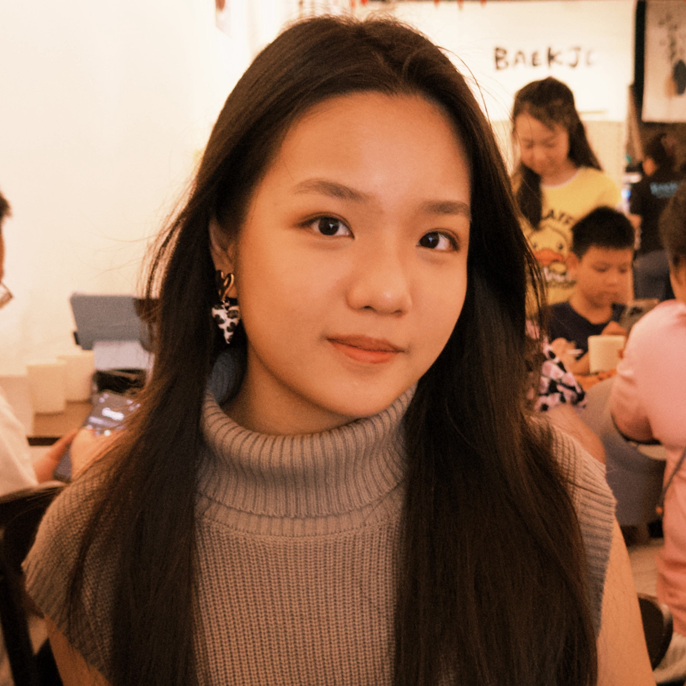
Yin-Ying Quah
BCS research intern @Monash: Research focus on AI for chemistry
Jia-Xin Kang
(2025~present)
Research assistant @Monash: Research focus on AI for chemistry
Lee-Ann Choong
(2025~present)
Research assistant @Monash: Research focus on AI for chemistry
Hanjing Li
MAI thesis research @Monash: Her focus is on AI bias
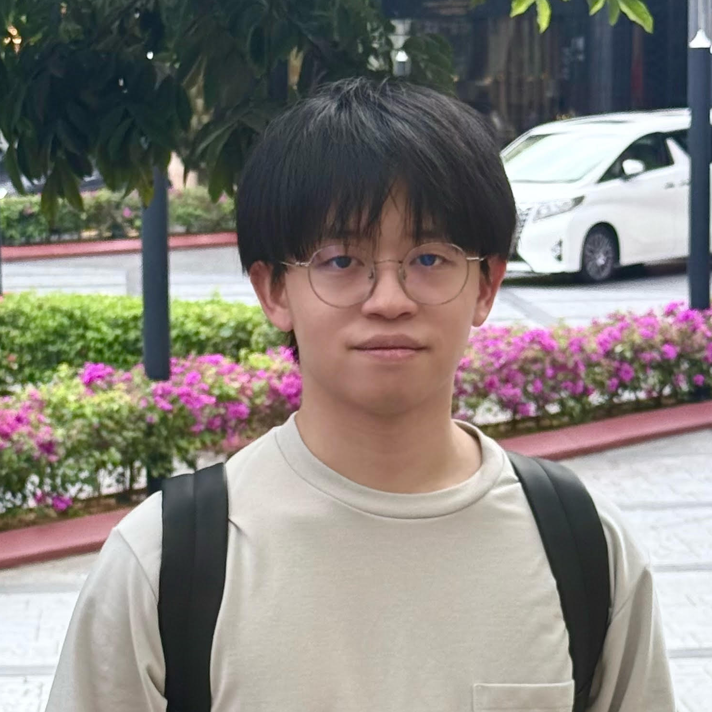
Andrew Yu-Zhang Ooi
MAI thesis research @Monash: Research focus on AI for crypto
Yue-Syuen Lim
Honours thesis research @Monash: Research focus on Gen AI bias
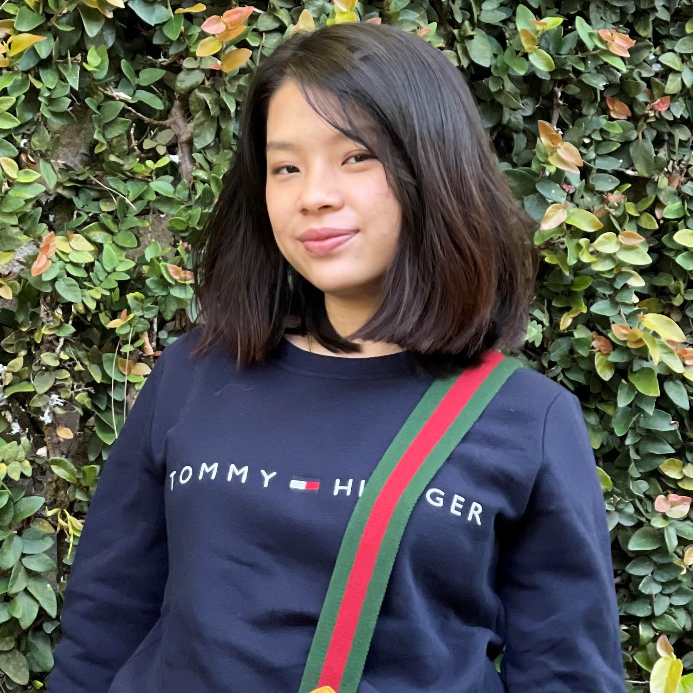
Julia Lau
PhD @Monash: Her focus is on gen AI safety, published in:
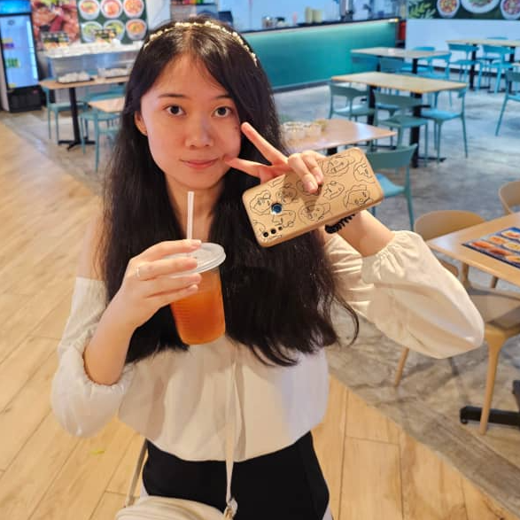
Karen Jia-Jun Koh
PhD @Monash: Research focus on Gen AI for chemistry
Joen Kun
PhD @Monash: Her focus is on AI for crypto
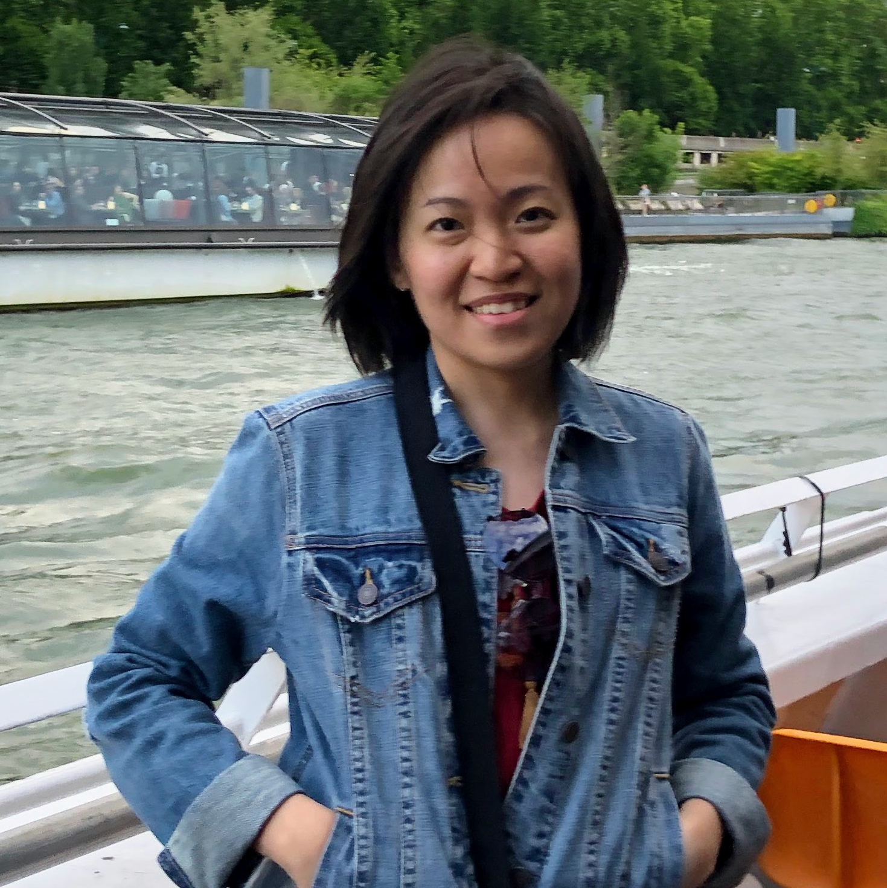
Alice Kar-Ee Hoh
PhD @Monash: Research focus on Gen AI for biology:
Pei-Sze Tan
PhD @Monash: Her focus is on facial emotions, published in:
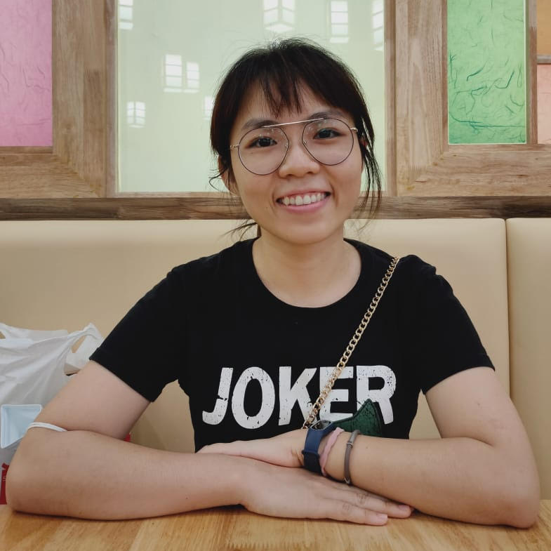
Ai-Fang Chai
PhD @Monash: Research focus on Gen AI for talking faces

Emily Sin-Yee Yap
PhD @Monash: Research focus on AI for human brain:
Ming Kang
(finalizing thesis)
PhD @Monash: Research focus on AI for human brain:

Yue-Tian Goi
PhD @Monash: Her focus is on AI for crypto, published in:
Yee-Fan Tan
PhD @Monash, 2025: Research focus on Gen AI for human brain:
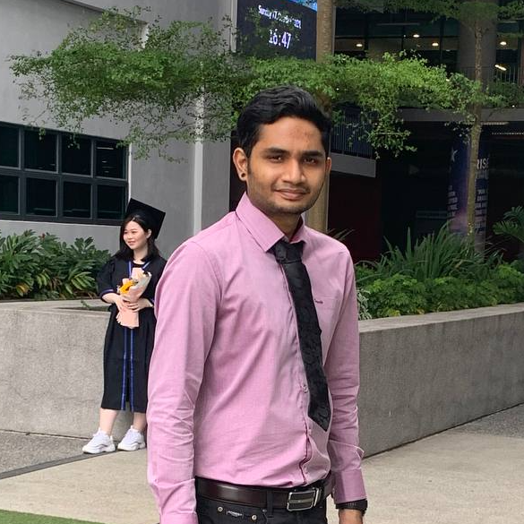
Sharana Dharshikgan Suresh Dass
PhD @Monash: Research focus on action recognition:
Yin-Yin Low
PhD @Monash, 2025: Her focus was on adversarial AI, published in:
Linh Ngoc Vu
PhD @Monash, 2025: Research focus on speech emotions:
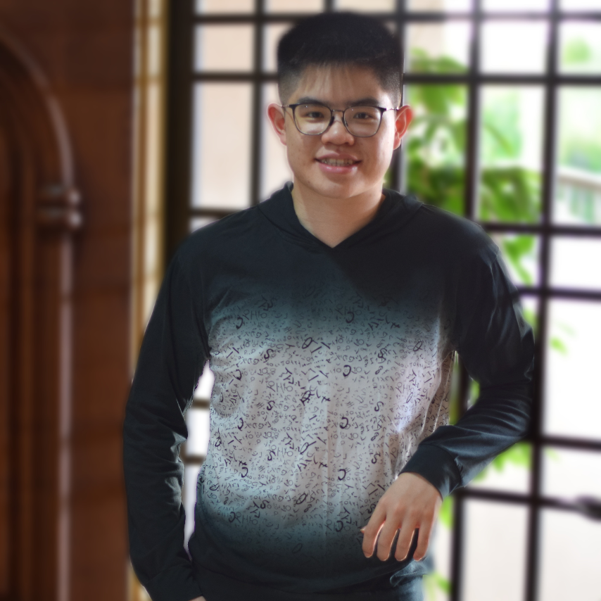
Jia-You Lim
PhD @Monash, 2025: Research focus on image super-resolution:
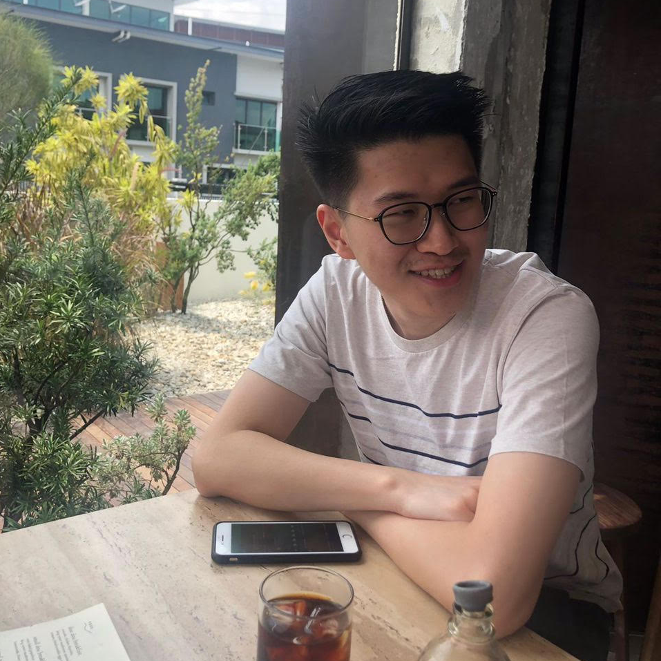
Hong-Hui Yeoh
(pending thesis revision)
PhD @Monash, 2026: Research focus on AI for breast cancer:
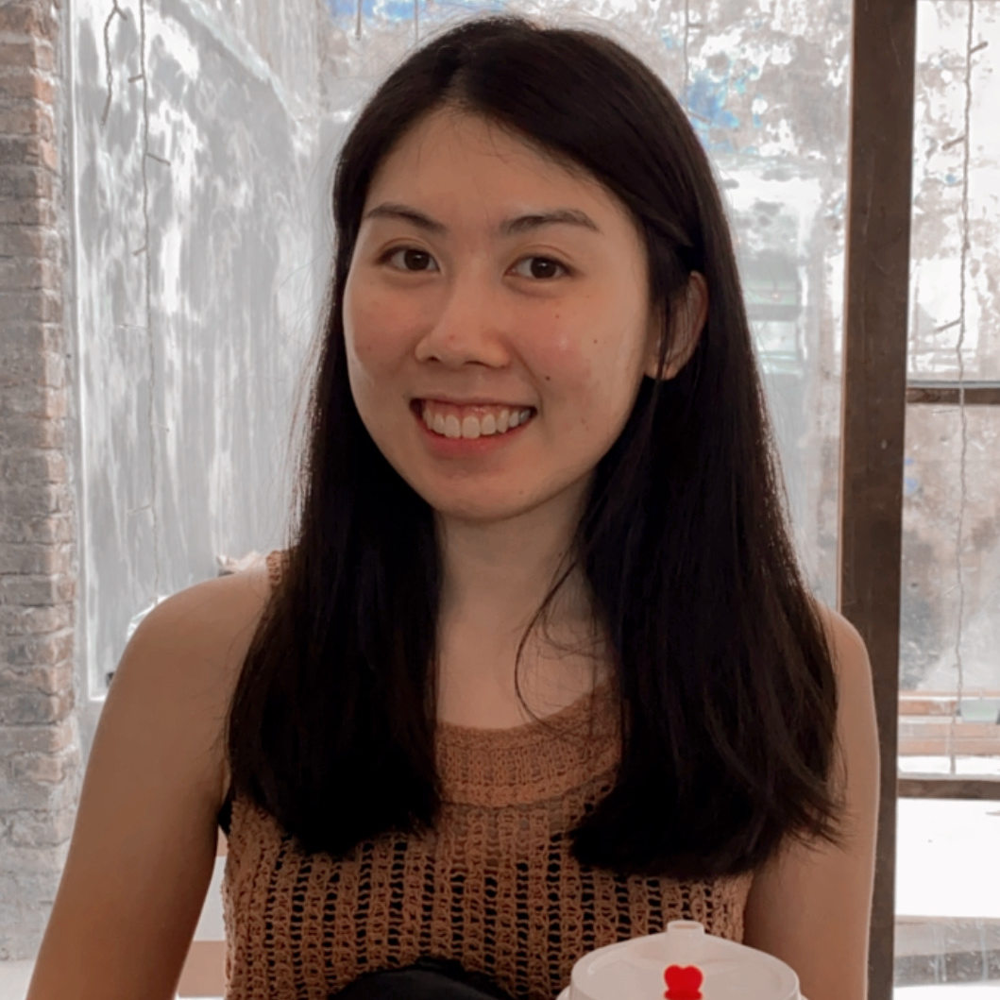
Jessie Shu-Min Leong
PhD @Monash, 2023: Her focus was on hidden emotions, published in:
Scarlett Jia-Wen Seow
PhD @Monash, 2023: Research focus on deepfakes:
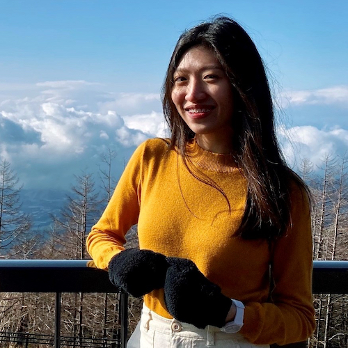
Vinky Chow
PhD @Monash, 2024: Research focus on AI for chemistry:
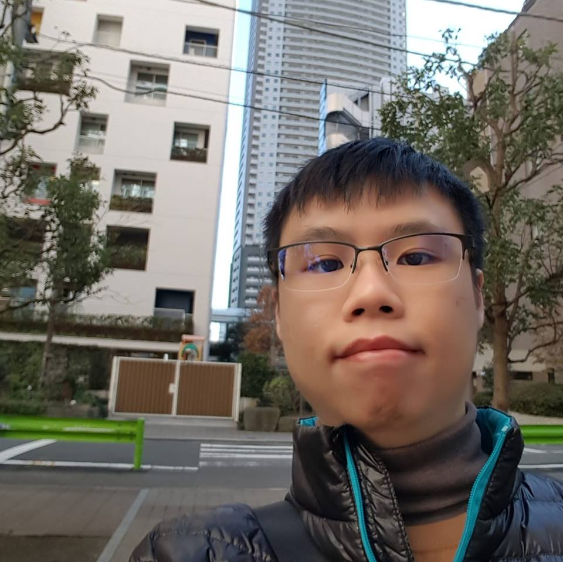
Brandon Boo-Guan Khoo
(Lecturer, Sunway University)
PhD @Monash, 2024: Research focus on deepfakes:
About Raphaël C.-W. Phan
Professor, Monash University
Focus on Security & Malicious AI
Raphaël adversarially researches on diverse aspects of security, privacy & AI; with recent passions being on
unconventional crypto, invisible motions, hidden emotions, fake fingers, and dark side AI.
He has led research projects funded by the UK government and MoD, as well as the Malaysian government and industry totalling in excess of RM4million.
He is co-designer of the U.S. NIST SHA-3 finalist BLAKE (used in the Blakecoin crypto currency) and has been invited to serve in over 100 peer-reviewed security conferences since 2005.
He was the Program Chair of Mycrypt 2016, and General Chair of Asiacrypt 2007 & Mycrypt 2005. He is also the Coordinating Editor of the IOS Press Series in Cryptology & Information Security, and is in the Editorial Board of the Cryptologia journal.
He has guest editted a special issue of the IEEE Transactions on Dependable & Secure Computing with focus on paradigm shifts in cryptographic engineering.
Raphael has published over 100 refereed journal papers, has Erdős number 2, and h-index 54.
Past Research Students
Jie Wang
PhD @Loughborough, UK, 2012: His focus was on advanced attack trees
Alex Burrage
PhD @Loughborough, UK, 2012: Research focus on linear complexity
Mahdi Aiash
PhD @Middlesex, UK, 2012: Research focus on security & QoS
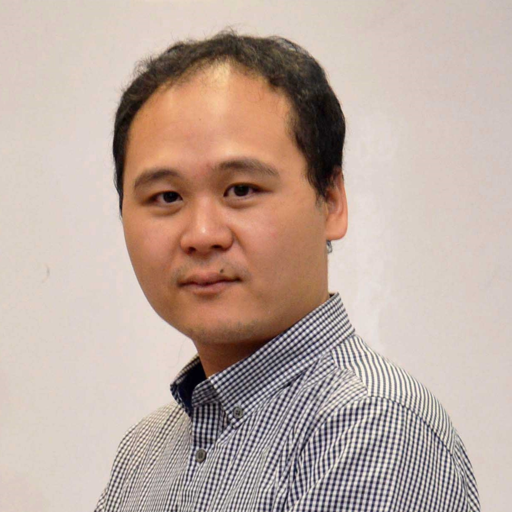
Wai-Kong Lee
PhD @UTAR, 2018: Research focus on hardware designs of crypto
Powered by w3.css